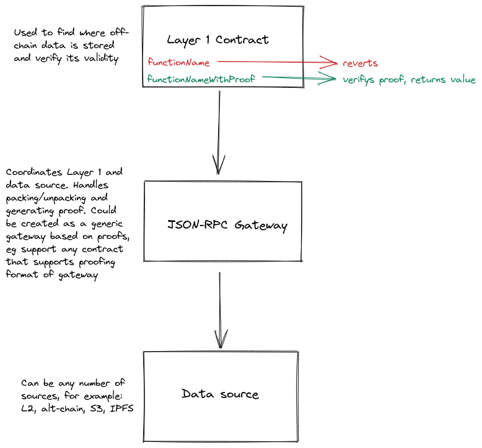

Durin & CCIP
Durin is the original version of CCIP-Read. It provides a way for Ethereum L1 contracts to specify offchain data lookup.
- EIP: https://eips.ethereum.org/EIPS/eip-3668
- Discussion: https://ethereum-magicians.org/t/durin-secure-offchain-data-retrieval/6728
- Examples:
Rough diagram of core components:

Proofs
- implementation dependant
- can't be faked by an attacker
- need to be validated on L1
An example from CCIP-Read repository using Optimism as the data source:
- The gateway:
- gets the state batch header
- constructs a Merkle proof
- gets the L2 contract address and slot that contains the required data
- gets a proof from Optimism rollup (via
eth_getProof) using address and slot - returns the state, proof, and wintess
- The client passes on the information to the L1 function
functionNameWithProof - The L1 function:
- verifies the proof
- returns the data to the user